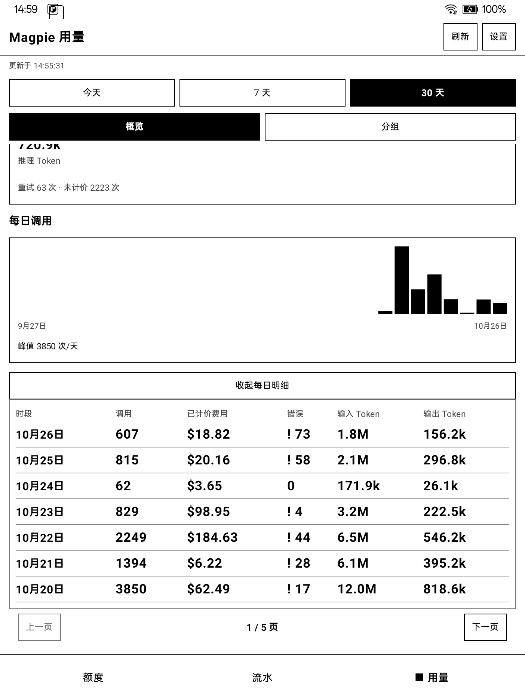
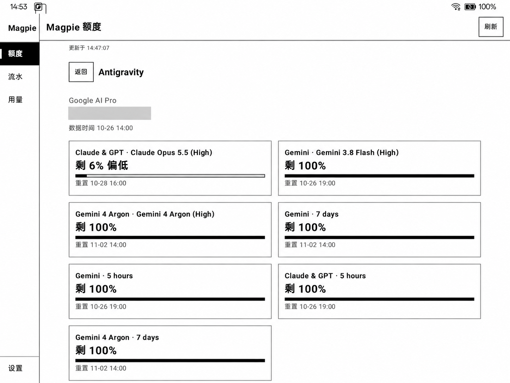
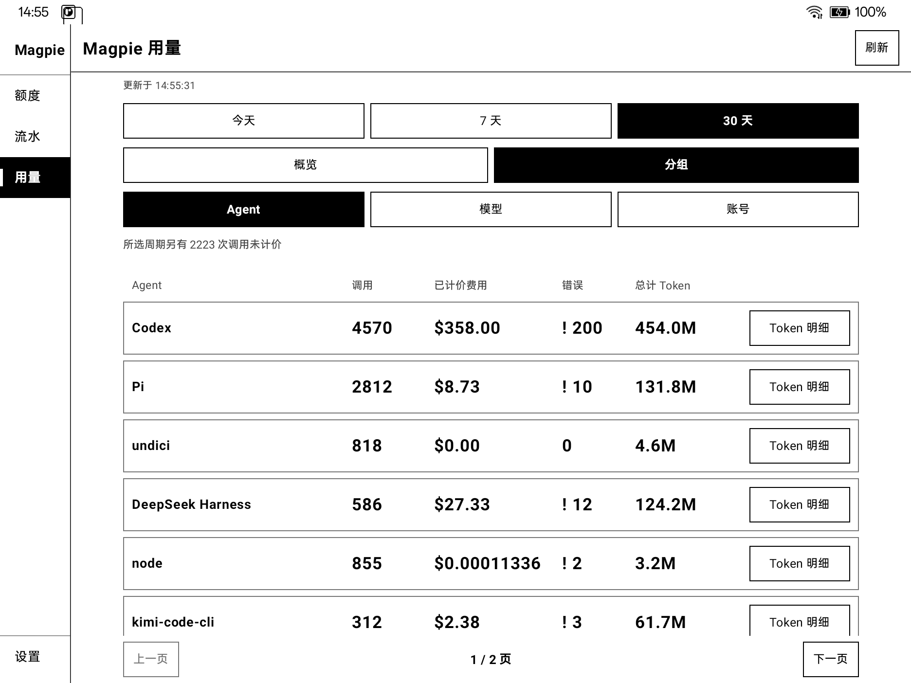
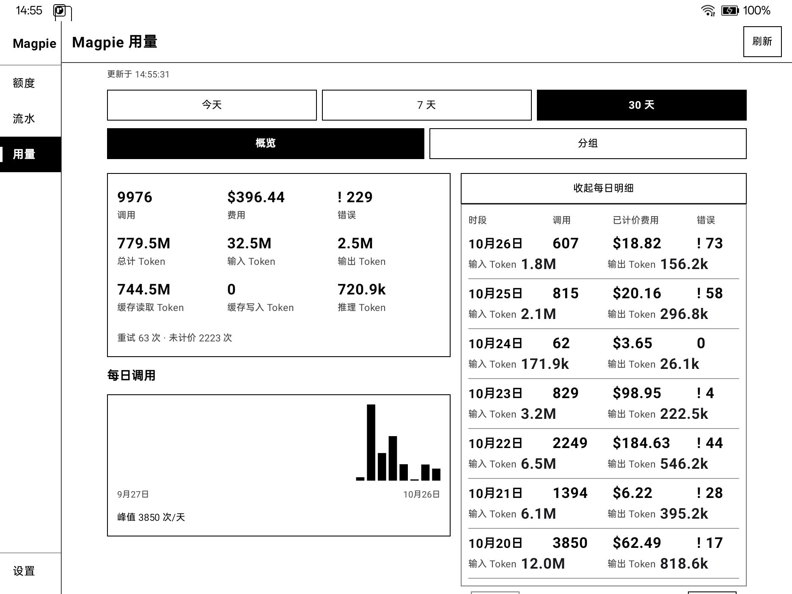
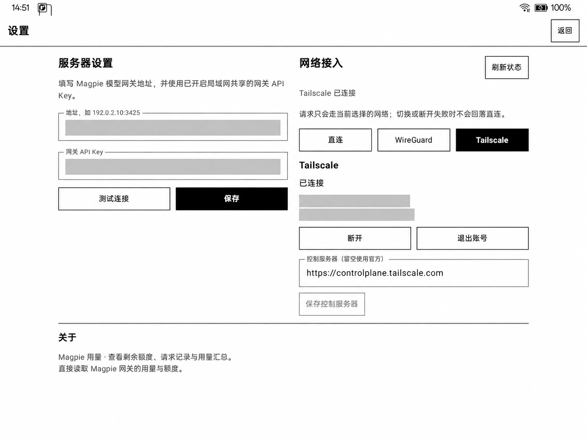
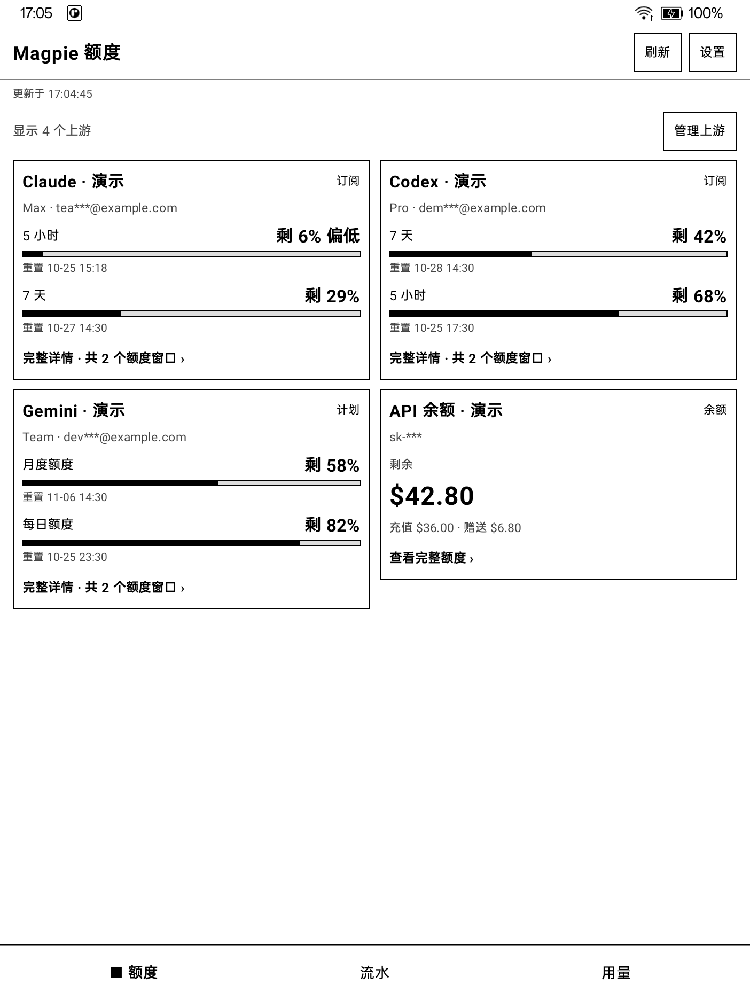
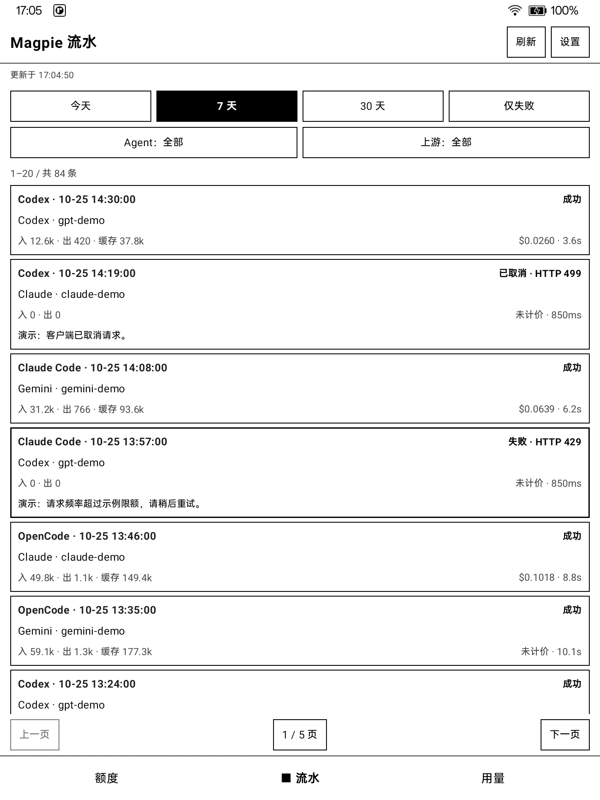
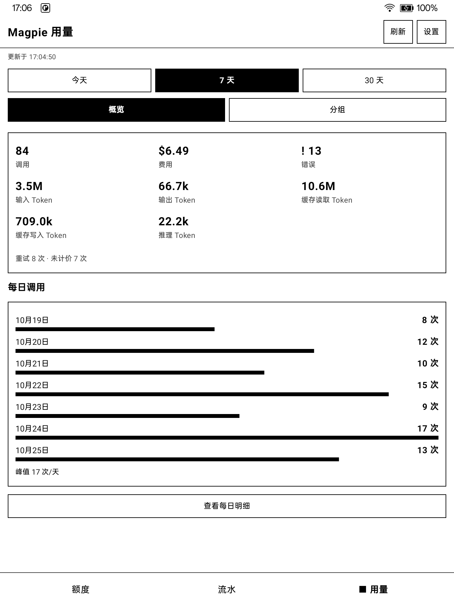

WireGuard
已有 WireGuard 网络？使用应用内的接入配置，访问私网中的 Magpie 服务。
Android 11+ · ARM · 墨水屏设计
Magpie 的额度、请求和用量，
一眼看清。
打开应用，看看还剩多少、刚刚用了什么，以及用量花在了哪里。
2026-10-26 发布 · 可覆盖升级，保留现有配置。

v0.2.1 · 2026-10-26
BOOX Note X2 真机界面，保留黑白风格与原有字号。邮箱、网络地址与 Key 字段已遮挡，点击可查看大图。




日常关心的，放在眼前
三个视角，读懂同一份用量。以下使用较早版本的演示数据截图。
把账号额度与重置时间放在一起。哪些还有余量、哪些需要等待，打开就能查看。

在请求流水里回看每次调用，逐条对照模型、Token 和费用。

今天按小时看，近 7 天、30 天按日期看。再按 Agent、模型或账号分组，找到用量的来源。

按你的节奏
用黑白层次组织信息，用分页控制阅读节奏。少一点装饰，让数字和内容自己说话。
默认展示静态截图，点击后才播放。
连接自己的服务
先选择网络配置面板，再点击连接；切换面板不会改变当前连接。填写 Magpie 模型网关地址与网关 API Key，测试通过后保存。
已有 WireGuard 网络？使用应用内的接入配置，访问私网中的 Magpie 服务。
接入 Tailscale 网络，也支持使用自建 Headscale 控制服务器。
应用内隧道仅承载本应用请求，断开或失败不会回落直连。配置方式与使用要求，请参阅 README 。
从这里开始
查看项目说明，了解服务配置、构建步骤和使用方式。